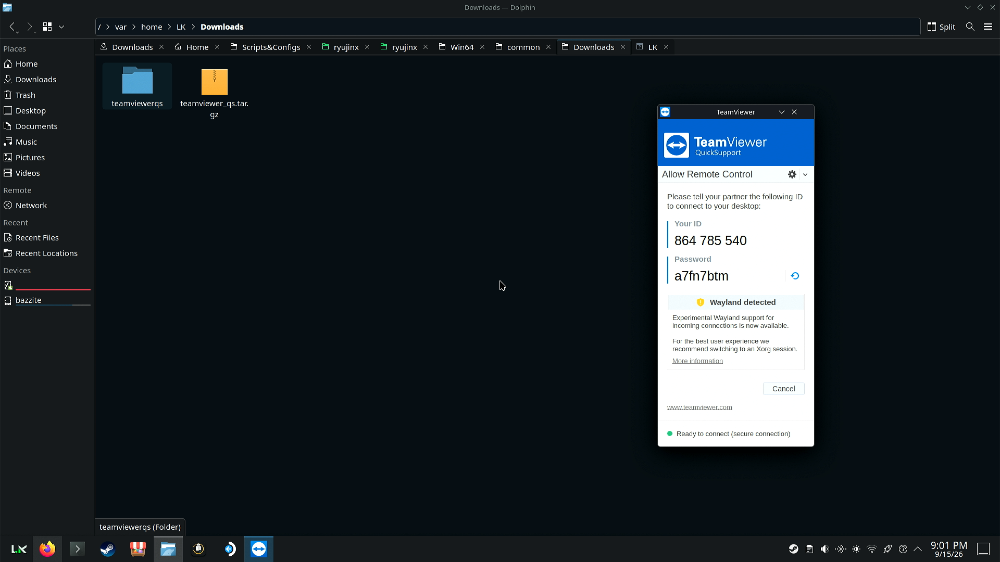
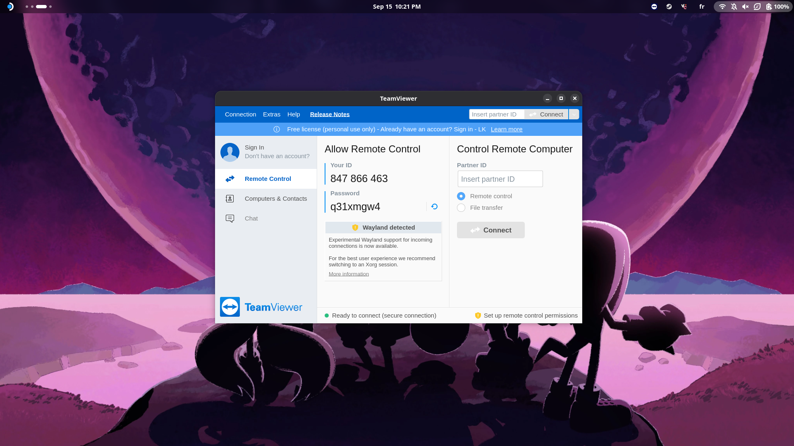
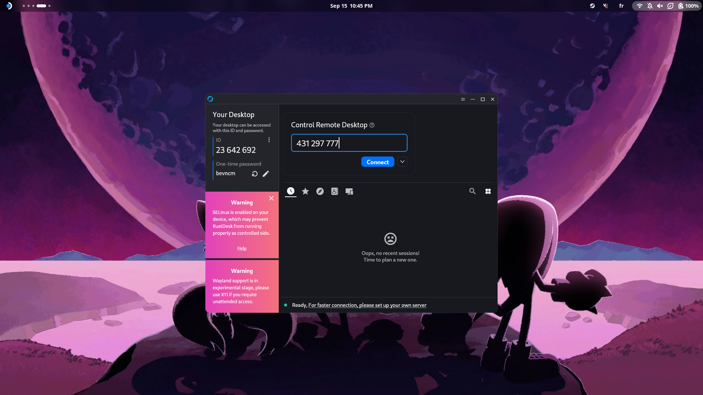
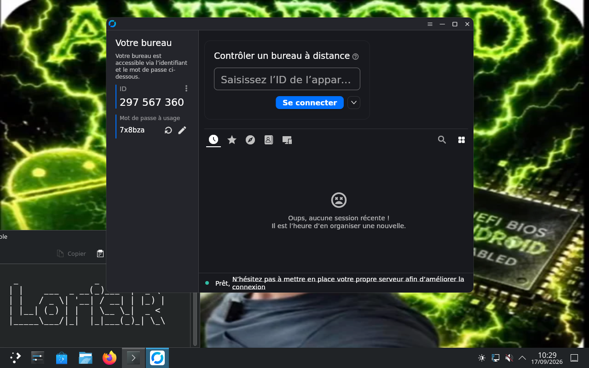

Documentation : Accès à distance¶
Auteur : Loris.R
Module : B2
Sujet : Mettre en œuvre trois méthodes d'accès à distance sous Linux
Notes
Ce guide présente l'installation, la configuration et le cas d'usage pratique de trois méthodes d'accès à distance aux philosophies distinctes : une solution propriétaire commerciale (TeamViewer / QuickSupport), une alternative open source légère (RustDesk au format AppImage) et un tandem haute performance initialement dédié au streaming et au cloud gaming (Sunshine / Moonlight).
Topologie réseau¶
Pour l'ensemble des démonstrations présentées dans cette documentation, l'infrastructure s'articule autour de trois machines réparties sur deux sous-réseaux distincts :
- Sous-réseau local 1 (
192.168.1.0/24) :- PC1 (
192.168.1.91) : Fedora GNOME / Bazzite — agit comme la station de contrôle centrale (client). - PC2 (
192.168.1.31) : Fedora KDE / Bazzite — poste cible situé dans le même segment réseau que le client.
- PC1 (
- Sous-réseau virtuel Proxmox (
192.168.209.0/24) :- PC3 (
192.168.209.151) : Machine virtuelle sous Debian 13 (KDE Plasma) hébergée sur Proxmox. Il s'agit d'un poste cible distant routé hors du réseau local de départ.
- PC3 (
graph TD
subgraph LAN1 ["Réseau Local (192.168.1.0/24)"]
R1[Routeur Local<br/>192.168.1.254]
PC1[PC1 - Fedora GNOME / Bazzite<br/>192.168.1.91<br/><i>Station Client</i>]
PC2[PC2 - Fedora KDE / Bazzite<br/>192.168.1.31<br/><i>Poste Cible Local</i>]
R1 <--> PC1
R1 <--> PC2
end
subgraph PROXMOX ["Infra Proxmox (192.168.209.0/24)"]
GW[Passerelle Virtuelle]
PC3[PC3 - VM Debian 13 KDE<br/>192.168.209.151<br/><i>Poste Cible Distant</i>]
GW <--> PC3
end
PC1 -.->|Session locale| PC2
PC1 -.->|Session distante| PC31. TeamViewer & QuickSupport¶
Cas d'usage : TP actuel vs Utilisation globale (LAN / WAN)
- Dans le cadre de ce TP : Prise en main du PC2 depuis le PC1 au sein du même réseau local (LAN1).
- En contexte professionnel / Utilisation globale : TeamViewer et QuickSupport sont principalement conçus pour des déploiements WAN (inter-sites, télétravail, support utilisateur externe). Grâce aux serveurs relais de TeamViewer, la connexion traverse de manière transparente les pare-feux et les routeurs NAT sans nécessiter de VPN ni de redirection de ports. QuickSupport est idéal pour le dépannage ponctuel auprès d'utilisateurs non techniciens, tandis que le client complet permet une administration permanente non supervisée.
Périmètre d'accès
- Machine cliente (contrôle) : PC1 (
192.168.1.91— Bazzite) - Machine cible (administrée) : PC2 (
192.168.1.31— Bazzite KDE)
Différence entre TeamViewer complet et QuickSupport
- TeamViewer (Client complet) : logiciel lourd incluant le démon système (
teamviewerd), la gestion de comptes centralisée, la prise en main entrante et sortante, ainsi que la gestion de carnet d'adresses. - QuickSupport (Module d'assistance) : application légère, portable et sans installation obligatoire. Elle est conçue exclusivement pour recevoir une assistance ponctuelle : elle génère un ID unique et un mot de passe temporaire dès son lancement sans altérer le système.
A. Déploiement sur le poste cible (PC2)¶
Sur le PC2 (Fedora KDE), la version légère QuickSupport a été récupérée sous forme d'archive compressée (tar.gz) directement depuis le site officiel de TeamViewer, puis extraite pour une exécution à la demande.
# Extraction de l'archive tarball
tar -xvf teamviewer_quicksupport.tar.gz
# Lancement de l'exécutable portable
./teamviewerqs/quicksupport

B. Installation avancée sur la station client (PC1)¶
Contrainte d'architecture immuable (Bazzite / rpm-ostree)
Le PC1 fonctionne sous Bazzite (système à image immuable basé sur Fedora Silverblue). Sur ce type de distribution, le répertoire système /usr est monté en lecture seule. On ne peut pas utiliser un gestionnaire classique comme dnf. L'installation de paquets natifs nécessite de superposer (layering) le paquet RPM dans l'image système via rpm-ostree, suivi d'un redémarrage.
Étape 1 : Téléchargement du paquet RPM officiel¶
Le paquet RPM 64 bits est récupéré dans l'espace temporaire du système :
curl -fL -o /tmp/teamviewer.rpm "[https://download.teamviewer.com/download/linux/teamviewer.x86_64.rpm](https://download.teamviewer.com/download/linux/teamviewer.x86_64.rpm)"
Vérification : s'assurer que le fichier téléchargé pèse environ 60 à 80 Mo via la commande ls -lh /tmp/teamviewer.rpm.
Étape 2 : Superposition du paquet via rpm-ostree¶
Le paquet est directement injecté dans l'arborescence immuable :
Effet : rpm-ostree prépare une nouvelle image système fusionnée (Changes queued for next boot) qui sera chargée au prochain démarrage.
Étape 3 : Application du nouveau déploiement système¶
Redémarrage de la machine pour basculer sur la nouvelle image hôte contenant TeamViewer :
Vérification : après le boot, la commande rpm-ostree status doit afficher teamviewer dans la section LayeredPackages.
Étape 4 : Déclaration et activation du service systemd¶
Le démon de TeamViewer (teamviewerd) doit être exécuté en tâche de fond. Étant stocké dans /opt/teamviewer/tv_bin/script/, il convient de copier son unité dans le répertoire modifiable /etc/systemd/system/ :
# 1. Copie du fichier de service systemd
sudo cp /opt/teamviewer/tv_bin/script/teamviewerd.service /etc/systemd/system/
# 2. Rechargement du gestionnaire de services
sudo systemctl daemon-reload
# 3. Activation et démarrage immédiat du démon
sudo systemctl enable --now teamviewerd.service
Vérification : la commande systemctl status teamviewerd.service doit retourner l'état Active: active (running).
Étape 5 : Lancement et connexion¶
L'application est exécutée sur le PC1 (via le terminal avec la commande teamviewer ou depuis le menu des applications) :

Une fois l'interface ouverte et le compte utilisateur connecté, il suffit de renseigner l'ID partenaire et le mot de passe fournis à l'écran par QuickSupport sur le PC2 pour initier le contrôle à distance.
C. Démonstration vidéo : TeamViewer¶
D. Procédure de désinstallation / nettoyage (maintenance)¶
Pour retirer proprement la couche logicielle sur un système immuable :
# Arrêt et suppression du service démon
sudo systemctl disable --now teamviewerd.service
sudo rm -f /etc/systemd/system/teamviewerd.service
sudo systemctl daemon-reload
# Retrait de la couche logicielle de l'image immuable
rpm-ostree uninstall teamviewer
# Redémarrage pour appliquer le nettoyage
systemctl reboot
2. RustDesk (Solution open source portable)¶
Cas d'usage : TP actuel vs Utilisation globale (LAN / WAN)
- Dans le cadre de ce TP : Prise en main à travers deux sous-réseaux distincts du PC3 (VM Debian 13 sous Proxmox) depuis le PC1.
- En contexte professionnel / Utilisation globale : RustDesk s'adapte aussi bien aux environnements LAN qu'WAN. Son principal atout en entreprise réside dans la possibilité d'auto-héberger son propre serveur de relais, garantissant une souveraineté totale des données sans dépendre d'infrastructures tierces.
Gestion du serveur d'affichage : Wayland vs X11
Les machines PC1 et PC2 fonctionnent nativement sous Bazzite avec le serveur d'affichage Wayland. Cependant, le support de Wayland par RustDesk sous Bazzite présentant des instabilités et des limitations d'interaction (pour en comprendre les raisons techniques, voir la section 5. Comparatif technique : X11 vs Wayland), le poste cible PC3 (VM Debian 13 KDE) a été délibérément configuré avec une session X11. Ce choix technique garantit une compatibilité parfaite.
Périmètre d'accès
- Machine cliente (contrôle) : PC1 (
192.168.1.91— Bazzite) - Machine cible (administrée) : PC3 (
192.168.209.151— VM Debian 13 KDE sur Proxmox)
Mettre en œuvre RustDesk¶
Contrairement à la lourdeur de déploiement de TeamViewer, RustDesk est disponible sous forme d'AppImage (un format d'application que j'affectionne tout particulièrement) sur les deux postes en quelques clics :
- Téléchargement du binaire
.AppImagedepuis le dépôt officiel GitHub de RustDesk. - Octroi des droits d'exécution :
chmod +x rustdesk-*.AppImage. - Lancement direct par double-clic ou via le terminal.
L'intérêt du format AppImage sur un OS immuable ou une VM
L'AppImage est un format d'encapsulation universel pour Linux. Il regroupe l'application et l'ensemble de ses dépendances dans un seul fichier binaire exécutable. Il ne nécessite aucune installation, aucun privilège d'administrateur (root), et n'altère en rien l'image système. C'est le format idéal aussi bien pour une distribution atomique comme Bazzite que pour un déploiement rapide sur une VM Debian 13.
Interface sur le client (PC1) :¶

Interface sur la cible (PC3) :¶

Il suffit ensuite de saisir l'identifiant du PC3 dans le champ du PC1, puis de renseigner le mot de passe de session généré par RustDesk pour établir la connexion à travers les réseaux routés.
Démonstration vidéo : RustDesk¶
3. Sunshine & Moonlight (Accès haute performance / faible latence)¶
Présentation et détournement de cas d'usage
- Sunshine : serveur hôte open source de flux vidéo/audio auto-hébergé. Il s'installe sur la machine distante à contrôler (PC2).
- Moonlight : client de réception ultra-léger et optimisé pour le décodage matériel. Il s'installe sur la machine de contrôle (PC1).
Avertissement et contexte d'utilisation
Contrairement aux deux autres solutions présentées, le tandem Sunshine / Moonlight n'est utilisable à la base qu'au sein d'un réseau local (LAN), bien qu'il reste possible d'y accéder à distance en passant par un VPN. J'ai souhaité mettre en place cette solution un peu exotique, que j'ai déjà eu l'occasion d'utiliser à titre personnel, car je pense qu'elle conserve un réel intérêt en administration réseau grâce à ses performances (à condition d'utiliser un compositeur compatible, voir le comparatif X11 vs Wayland).
Cas d'usage : TP actuel vs Utilisation globale (LAN / WAN)
- Dans le cadre de ce TP : Prise en main à très faible latence du PC2 depuis le PC1 sur le réseau local LAN1.
- En contexte professionnel / Utilisation globale : Cette solution est conçue nativement pour un usage en LAN haut débit (WiFi 6 / Ethernet Gbps) en raison de sa forte consommation de bande passante et de ses exigences en matière de latence. Pour un usage en WAN, elle nécessite obligatoirement la mise en place préalable d'un tunnel sécurisé (VPN).
Périmètre d'accès
- Machine cliente (contrôle) : PC1 (
192.168.1.91— Bazzite) - Machine cible (administrée) : PC2 (
192.168.1.31— Bazzite KDE)
Pourquoi utiliser cette solution en administration système ?¶
Bien que le couple Sunshine / Moonlight soit initialement conçu pour le streaming de jeux vidéo en réseau local, son architecture offre des avantages qui peuvent présenter un intérêt dans des cas très spécifiques pour l'administration à distance :
- Latence quasi nulle : enregistrement et encodage vidéo matériel direct (via GPU) permettant un flux à 60 ou 120 FPS constant.
- Fluidité d'affichage exceptionnelle : supérieure aux protocoles classiques lors du traitement de tâches graphiques lourdes.
- Sécurité : appairage chiffré via un code PIN à quatre chiffres lors de la première poignée de main entre le client Moonlight et le serveur Sunshine.
Une fois l'appairage effectué, Moonlight permet d'afficher l'intégralité du bureau distant du PC2 avec une réactivité presque identique à celle d'un moniteur branché physiquement sur la machine.
4. Tableau comparatif des solutions¶
Pour synthétiser les spécificités de chaque outil et guider le choix de la solution selon le besoin d'administration, voici un comparatif de leurs caractéristiques :
| Critère | TeamViewer & QuickSupport | RustDesk | Sunshine & Moonlight |
|---|---|---|---|
| Licence & Philosophie | Propriétaire / Commercial (Gratuit usage privé) | Open source & Auto-hébergeable | Open source & 100 % Auto-hébergé |
| Environnement Réseau | LAN & WAN (Traversée transparente des pare-feu via serveurs relais cloud propriétaires) | LAN & WAN (Serveurs de signalement publics ou serveur privé auto-hébergé) | LAN prioritaire (Accès WAN possible via VPN) |
| Compatibilité OS & Serveur d'affichage (Détails en Section 5) | Multiplateforme (Linux X11 & Wayland via XWayland/PipeWire, Windows, macOS) | Multiplateforme (Linux X11 recommandé ; Wayland instable), Windows, macOS | Multiplateforme (Linux X11 & Wayland avec KMS/PipeWire, Windows, macOS) |
| Type de Déploiement | Client lourd : installation système (RPM/démon) QuickSupport : binaire portable |
AppImage autonome (Exécution directe sans installation ni privilèges) | Serveur : démon système de capture hôte Client : application réceptrice légère |
| Performance & Latence | Standard (Optimisé pour la bureautique et le transfert de fichiers) | Bonne à Très bonne (Ajustable selon le relais utilisé et le codec choisi) | Ultra-haute performance (Encodage matériel GPU, 60/120 FPS, latence imperceptible) |
| Prérequis Cible | Interaction utilisateur requise (Transmission ID / Mot de passe temporaire) | Configuration flexible (Accès permanent ou temporaire via mot de passe) | Configuration préalable (Service actif et appairage PIN initial requis) |
| Cas d'usage idéal | Support utilisateur à chaud et assistance ponctuelle grand public | Support IT régulier | Station de travail graphique, CAO/3D, montage vidéo à distance, Cloud Gaming |
5. Comparatif technique : X11 vs Wayland¶
L'architecture d'affichage d'un système Linux conditionne directement le bon fonctionnement des logiciels de prise en main à distance. Comprendre les différences fondamentales entre X11 et Wayland permet d'expliquer les contraintes techniques rencontrées lors de la mise en œuvre de ce TP.
Définitions préalables : Qu'est-ce que X11 et Wayland ?¶
- X11 (X Window System Version 11) : C'est le système et protocole d'affichage historique du monde Unix/Linux, existant depuis 1984. Il repose sur un serveur centralisé (
Xorg) qui gère la communication entre les applications et le matériel graphique. Sous X11, toutes les applications partagent un même espace graphique et une mémoire globale, ce qui permet à n'importe quelle application d'intercepter les fenêtres des autres ou de lire les frappes clavier au niveau du système. - Wayland : C'est un protocole d'affichage moderne conçu pour remplacer X11. Contrairement à X11, Wayland élimine le serveur centralisé
Xorget confie l'ensemble des tâches (affichage, gestion des fenêtres et composition) à un composant unique appelé le compositeur (Mutter sous GNOME, KWin sous KDE). Wayland intègre un principe de sécurité et d'isolation stricte : chaque application fonctionne dans sa propre « bulle » et n'a aucun accès aux images ou aux événements clavier/souris des autres applications.
A. Origines et Philosophie¶
-
X11 (X Window System Version 11) :
- Origines : Développé au MIT en 1984, X11 est un protocole vieux de plus de 40 ans conçu à une époque où le modèle informatique reposait sur un serveur central puissant et des terminaux légers clients.
- Philosophie : Architecture client-serveur stricte. Le serveur X (
Xorg) gère l'affichage et les périphériques d'entrée. Chaque fenêtre est un client X qui discute avec le serveur via un protocole réseau textuel, même si le client et le serveur s'exécutent sur la même machine.
-
Wayland :
- Origines : Projet initié en 2008 par Kristian Høgsberg (développeur chez Red Hat) afin de remplacer le code vieillissant, complexe et maintenu difficilement de X11.
- Philosophie : Simplification radicale du pipeline graphique (« every frame is perfect »). Wayland n'est pas un serveur, mais un protocole. La fonction de serveur d'affichage, de gestionnaire de fenêtres et de compositeur est fusionnée au sein d'un composant unique appelé le compositeur (Mutter sous GNOME, KWin sous KDE).
B. Caractéristiques d'architecture, rôle du compositeur et sécurité¶
Où se trouve le compositeur dans chaque modèle ?¶
-
Dans le modèle X11 : Le compositeur est une couche externe séparée du serveur d'affichage
Xorg. À l'origine, X11 n'avait aucun compositeur. Chaque application dessinait sa fenêtre, etXorgles affichait directement. Plus tard, une extension (Composite) a été ajoutée pour permettre à un programme tiers (comme Picom ou le WM) de récupérer les images des fenêtres, d'y ajouter des effets (ombres, transparence, anti-déchirure), puis de renvoyer le résultat àXorg. CommeXorgreste le hub central au milieu, toutes les applications partagent le même espace mémoire, ce qui permettait aux logiciels de prise en main à distance de tout intercepter très facilement. -
Dans le modèle Wayland : Il n'y a plus de serveur central Xorg. Le compositeur est le cœur du système : il accumule les rôles de serveur d'affichage, de gestionnaire de fenêtres et d'assembleur graphique. Les applications communiquent directement avec lui. C'est lui qui distribue l'affichage et qui isole hermétiquement chaque application : une application ne sait pas ce que font les autres fenêtres et ne peut pas lire la mémoire globale.
graph TD
subgraph X11 ["Modèle X11 : Architecture centralisée (Sans isolation)"]
direction TB
AppX1["Application A"] <-->|Protocol X11| Xorg
AppX2["Application B<br/><i>(ex: RustDesk/TeamViewer)</i>"] <-->|Peut lire/injecter partout !| Xorg["<b>Serveur Xorg</b><br/><i>(Hub central : conserve toutes les fenêtres en mémoire)</i>"]
WMX["<b>Gestionnaire de fenêtres & Compositeur</b><br/><i>(Module externe : placement, effets)</i>"] <-->|Extension Composite| Xorg
Xorg <-->|Drivers| GPU1["Matériel / GPU & Écran"]
end
subgraph Wayland ["Modèle Wayland : Pipeline direct (Isolation stricte)"]
direction TB
AppW1["Application A"] <-->|Protocole Wayland| Comp
AppW2["Application B<br/><i>(Isolée dans sa bulle)</i>"] <-->|Ne voit rien d'autre !| Comp["<b>Compositeur Wayland (Mutter / KWin)</b><br/><i>(Fusionne Serveur + WM + Compositeur)</i>"]
Comp <-->|KMS / evdev| GPU2["Matériel / GPU & Écran"]
endLexique & Définitions des termes techniques¶
Pour bien comprendre le fonctionnement du système d'affichage Linux et les défis du contrôle à distance, voici la définition des composants clés :
- Serveur Xorg (
Xorg) : Le serveur d'affichage historique de X11. C'est l'intermédiaire central par lequel transitaient obligatoirement tous les évènements clavier/souris et toutes les fenêtres d'affichage. - Gestionnaire de fenêtres (Window Manager / WM) : Le programme chargé de positionner les fenêtres sur l'écran, de dessiner leurs bordures (boutons réduire/fermer) et de gérer le focus. (Exemples : Openbox, i3, ou modules intégrés à KWin/Mutter).
- Compositeur (Compositor) : Le composant qui prend les images individuelles dessinées par chaque application et les "compose" (assemble) en une seule image finale envoyée à l'écran. Il gère la fluidité, la transparence, les animations et élimine le tearing (déchirure d'image).
- PipeWire : Un serveur multimédia moderne sous Linux spécialisé dans la capture et la redirection des flux audio/vidéo à très faible latence. Sous Wayland, c'est PipeWire qui est chargé d'extraire le flux d'écran pour le transmettre de manière sécurisée à une application cliente (comme Teams, Discord ou RustDesk).
- XDG-Desktop-Portal : Un service intermédiaire de sécurité (une "boîte de dialogue système"). Sous Wayland, lorsqu'une application veut capturer l'écran, elle n'a pas le droit de le faire directement : elle demande au Portal, qui affiche une pop-up à l'utilisateur : "Autorisez-vous cette application à partager votre écran ?". Une fois validé, le Portal transmet le flux via PipeWire.
- KMS (Kernel Mode Setting) : Une fonctionnalité du noyau Linux qui permet au compositeur de communiquer directement avec la carte graphique pour régler la résolution, la fréquence de rafraîchissement et la mémoire vidéo sans passer par un serveur intermédiaire.
- evdev (Event Device) : Le gestionnaire d'événements d'entrée du noyau Linux. Il centralise les signaux bruts envoyés par le matériel physique (pressions sur le clavier, mouvements de la souris, écrans tactiles).
uinput: Un module du noyau Linux qui permet à un logiciel (comme RustDesk ou Sunshine) de créer des périphériques d'entrée virtuels. Cela permet de simuler de vrais clics de souris ou des frappes de clavier au niveau du système sans avoir de matériel physique branché.
C. Pourquoi Wayland pose problème aux solutions d'accès à distance ?¶
L'isolation stricte garantie par Wayland casse le modèle de fonctionnement historique des logiciels de prise en main à distance (TeamViewer, RustDesk, VNC, etc.) qui s'appuyaient sur les API globales de X11 pour capturer l'écran et simuler des entrées.
-
Absence d'API de capture globale native : Sous Wayland, une application ne peut pas faire de simple « capture d'écran » directe. Pour capturer l'image sous Linux moderne, le logiciel doit obligatoirement passer par les sous-systèmes XDG-Desktop-Portal et PipeWire. Cela impose une demande d'autorisation explicite à l'utilisateur (pop-up système), ce qui complique les accès non supervisés.
-
Émulation des entrées utilisateur (Clavier / Souris) : Pour injecter des mouvements de souris ou des frappes au niveau du système, les logiciels doivent utiliser le module noyau
uinputou des protocoles spécifiques au compositeur (virtual-keyboard,wlr-virtual-pointer). Si la distribution (comme Bazzite) ou le binaire de l'application (ex. RustDesk en AppImage) gère mal ces interfaces, les clics et le clavier deviennent inopérants. -
Incompatibilités inter-distributions / compositeurs : Chaque environnement (GNOME/Mutter, KDE/KWin, Sway/wlroots) implémente les extensions Wayland de manière parfois hétérogène. Une solution qui fonctionne sous Ubuntu GNOME peut échouer sur Bazzite ou Debian KDE.
Choix technique dans ce TP :¶
C'est pour cette raison précise que la machine virtuelle PC3 (Debian 13) a été configurée sur une session X11.